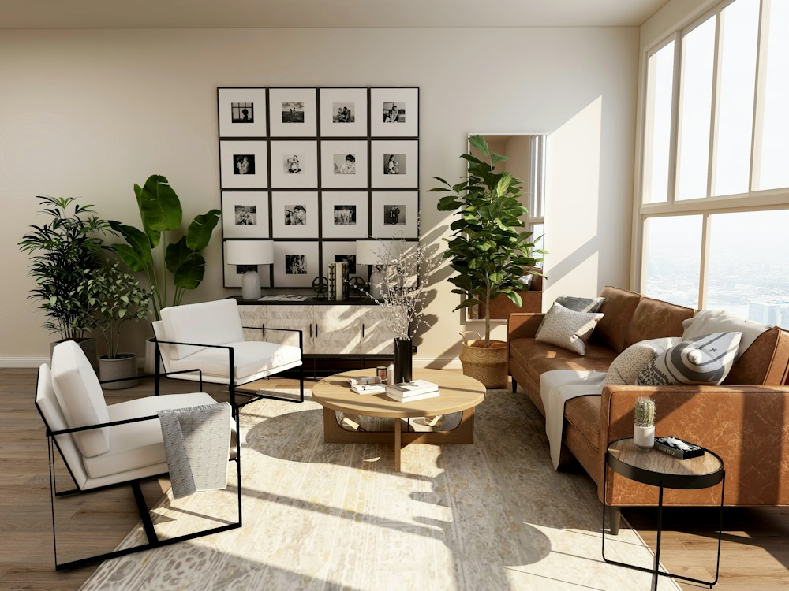
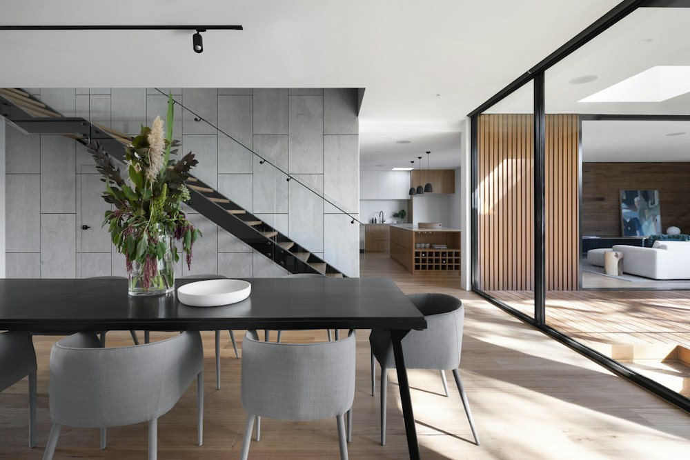
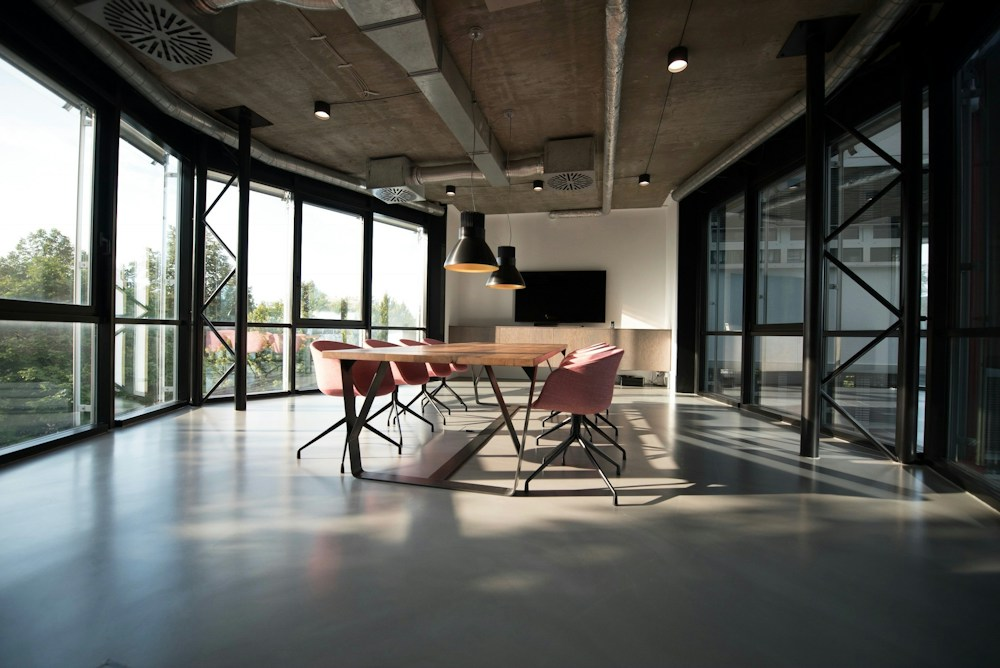

Įsigiliname
Sėkmingas pardavimas prasideda gerokai anksčiau nei pirmoji apžiūra. Išklausome jūsų poreikius, įsigiliname į situaciją ir susitariame dėl pardavimo tikslų. Atstovaujame jums.

NEKILNOJAMASIS TURTAS · VILNIUS
Ir atskleidžiame ją pirkėjams.
Mes dirbame Jums, kad kartu pasiektume
maksimalaus rezultato.
01 / APIE SOLIDI
Solidi – tai šiuolaikiška nekilnojamojo turto agentūra, kurioje sprendimai priimami remiantis duomenimis, patirtimi ir rinkos analize, o ne nuojauta.
Deriname profesionalią rinkodarą, stiprias derybas ir kruopščiai valdomą procesą, kad mūsų klientai priimtų užtikrintus sprendimus ir pasiektų geriausią rezultatą.
Pradėkime nuo pokalbio02 / NT PARDAVIMAS
Būsto pardavimo paslaugos
Vilniuje ir jo priemiesčiuose.
Sėkmingas pardavimas prasideda gerokai anksčiau nei pirmoji apžiūra. Išklausome jūsų poreikius, įsigiliname į situaciją ir susitariame dėl pardavimo tikslų. Atstovaujame jums.
Analizuojame rinką, pagrindžiame siūlomą kainą ir išryškiname būsto privalumus. Padedame paruošti jį pardavimui ir apgalvojame, kaip pristatyti pirkėjams.
Organizuojame apžiūras, vedame derybas ir koordinuojame pardavimo procesą. Kiekviename etape žinote, kas vyksta ir kokie žingsniai laukia toliau.
03 / ATRASKITE SAVO VIETĄ
NAMAS

BUTAS
BUTAS NAMAS
NAMAS
 NAMAS
NAMAS
 BUTAS
BUTAS

KOMERCINĖS PATALPOSNUOMA · NAMAS
NUOMA · NAMAS
NUOMA · BUTAS
Šioje kategorijoje pavyzdinių objektų nėra. Pasirinkite kitą kategoriją.
Šablono peržiūra: nuotraukos, kainos ir objektų duomenys yra iliustraciniai.
PROJEKTO VIZUALINIS PAVYZDYS04 / PROJEKTAI
Nauja pradžia prasideda nuo vietos, kurioje gera būti. Atraskite namų galimybes Vilniuje ir jo priemiesčiuose.
Pasikalbėkime apie projektus05 / SUSISIEKIME
Planuojate parduoti, pirkti ar išnuomoti?
Papasakokite, kas Jums svarbu.